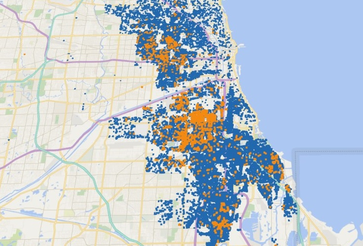

Data in the Community

Display Layers
a
b
c
d
e
Abandoned or Vacant Building Reports and Violations Map
Collected via the Chicago 311 program.
Cook County Land Bank:
CCLBA works to reduce and return vacant...
HUD.GOV:
Vacant and Abandoned Properties: Turning...
$1 Large Lots:
A housing land use approach that was developed as part...
CMAP Illinois:
The official regional planning organization for...